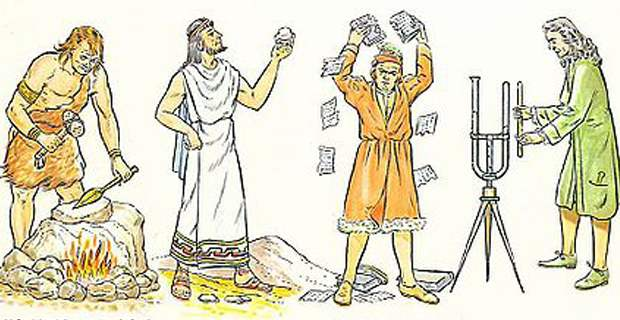

- Домой

Зачатки химии возникли ещё со времён появления человека. Поскольку человек всегда так или иначе имел дело с химическими веществами, его первые эксперименты с огнём, дублением шкур, приготовлением пищи можно назвать зачатками практической химии. Постепенно практические знания накапливались, и в самом начале развития цивилизации люди умели готовить некоторые краски, эмали, яды и лекарства. Вначале человек использовал биологические процессы, такие, как брожение, гниение; позже, с освоением огня, начал использовать процессы горения, спекания, сплавления. Использовались окислительно-восстановительные реакции, не протекающие в живой природе — например, восстановление металлов из их соединений.
Такие ремёсла, как металлургия, гончарство, стеклоделие, крашение, парфюмерия, косметика, достигли значительного развития ещё до начала нашей эры. Например, состав современного бутылочного стекла практически не отличается от состава стекла, применявшегося в 4000 году до н. э. в Египте. Хотя химические знания тщательно скрывались жрецами от непосвящённых, они всё равно медленно проникали в другие страны. К европейцам химическая наука попала главным образом от арабов после завоевания ими Испании в 711 году. Они называли эту науку „алхимией“, от них это название распространилось и в Европе.
Известно, что в Египте уже в 3000 году до н. э. умели получать медь из её соединений, используя древесный уголь в качестве восстановителя, а также получали серебро и свинец. Постепенно в Египте и Месопотамии было развито производство бронзы, а в северных странах — железа. Делались также теоретические находки. Например, в Китае с XXII века до н. э. существовала теория об основных элементах (Вода, Огонь, Дерево, Золото, Земля). В Месопотамии возникла идея о противоположностях, из которых построен мир: огонь—вода, тепло—холод, сухость—влажность и т. д.
В V веке до н. э. в Греции Левкипп и Демокрит развили теорию о строении вещества из атомов — атомизм. По аналогии со строением письма они заключили, что как речь делится на слова, а слова состоят из букв, так и все вещества состоят из определённых соединений (молекул), которые в свою очередь состоят из неделимых элементов (атомов).
В V веке до н. э. Эмпедокл предложил считать основными элементами (стихиями) Воду, Огонь, Воздух и Землю. В IV веке до н. э. Платон развил учение Эмпедокла: каждому из этих элементов соответствовал свой цвет и своя правильная пространственная фигура атома, определяющая его свойства: огню — красный цвет и тетраэдр, воде — синий и икосаэдр, земле — зелёный и гексаэдр, воздуху — жёлтый и октаэдр. По мнению Платона, именно из комбинаций этих „кирпичиков“ и построен весь материальный мир. Учение о четырёх превращающихся друг в друга было унаследовано Аристотелем.